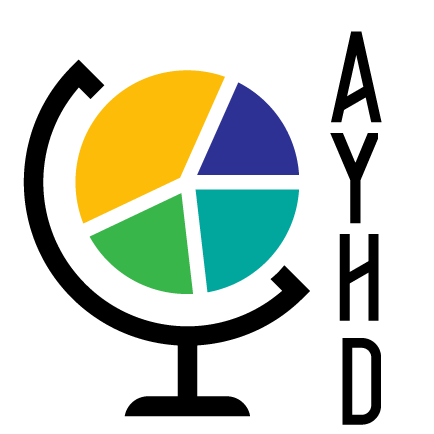

We would like to acknowledge following people, organizations and institutions for supporting us either financially, organizationally or otherwise.
Faculty of Science, Charles University
 Department
of Demography and Geodemography, Faculty of Science, Charles
University
Department
of Demography and Geodemography, Faculty of Science, Charles
University
 Association for Young Historical Demographers
 Radboud
University: Radboud Group for Historical Demography and Family
History
Radboud
University: Radboud Group for Historical Demography and Family
History
The N.W. Posthumus Institute: Research School for Economic and Social History
 European Society Of Historical
Demography
European Society Of Historical
Demography

 Institute of Sociology,
Czech Academy of Sciences
Institute of Sociology,
Czech Academy of Sciences
Vice-dean of the Geographical Institute, Faculty of Science, Charles University
The Student chamber of the Academic Senate of the Faculty of Science, Charles University
Dr Olga Kurtinová
Helena Ferklová